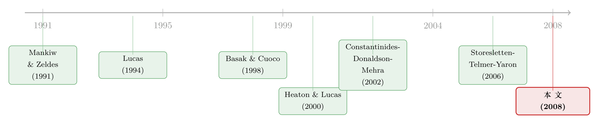

谁被挡在股市门外，并不重要——重看「有限参与」对股权溢价的真实贡献
本文读的是 Gomes & Michaelides (2008, RFS)：他们搭了一个有异质性主体、不完全市场、生命周期收入与内生股市参与的一般均衡模型，能同时匹配 3.83% 的股权溢价、2.58% 的低无风险利率（相对风险厌恶系数不超过 5），又匹配住户层面的股市参与率与资产持有。最反直觉的结论是：一旦让「有限参与」内生地长出来，它对股权溢价的贡献几乎可以忽略——真正抬高溢价的，是股东之间的不完全风险分担，而不是把谁挡在了门外。
1 一个被广泛接受、却可能用错了的「解」
股权溢价之谜（equity premium puzzle）是资产定价里最顽固的一道题：历史上股票比国债年均多赚了 6 个百分点，可标准的代表性主体模型要解释这个差距，得把相对风险厌恶系数（coefficient of relative risk aversion, RRA）调到几十甚至上百——一个谁都不相信的数字。
四十年来，人们想了无数办法去「凑」出这个溢价。其中一条被广泛接受的路子，叫有限股市参与（limited stock market participation）。它的逻辑很简单也很迷人：既然现实里只有一部分家庭真正持有股票，那么承担全部股市风险的就不是「所有人」，而是「这一小撮人」。风险被摊到更少的肩膀上，每一份风险要求的补偿自然更高，于是溢价就被撑了起来。Saito (1995)、Basak and Cuoco (1998)、Guvenen (2005) 都沿着这条线走，并且都得到了一个漂亮的、被放大的溢价。
听起来天衣无缝。但这里藏着一个被悄悄假设掉的前提——在这些模型里，「谁参与、谁不参与」是外生塞进去的。研究者用手画了一条线，把一部分家庭强行赶出股市。
一个自然的问题是：如果不去手动画这条线，而是让家庭自己决定要不要进场，被挡在门外的会是哪些人？他们持有多少财富？如果答案是「被挡在外面的恰恰是穷人」，那么把他们排除在股市之外，对股权溢价又能有多大影响？
这正是 Gomes and Michaelides (2008) 要回答的问题。而他们的答案，几乎把「有限参与解释溢价」这条路整个推翻了。
2 核心张力：把谁挡在门外，到底重不重要？
先把结论摆在前面，再慢慢讲清楚它是怎么来的。
在本文的模型里，股市参与是内生的：每个家庭面对一笔固定的入场费（fixed participation cost），自己权衡值不值得交。结果——和数据高度一致——选择不进场的，全是穷人。作者引用了消费者金融调查（Survey of Consumer Finances）的数字来锚定这一点：在财富高于中位数的家庭里，参与率是 88.84%；而在财富低于中位数的家庭里，只有 15.21%。股东的财富中位数是 $154,600，非股东只有 $7,300——相差二十倍。
于是反转出现了。既然被挡在门外的家庭本来就几乎没有财富，把他们从股市里剔除，对总体风险的再分配能有多大影响？答案是：微乎其微。穷人无论是不是股东，都不持有多少资产，他们的边际效用对资产定价本就贡献甚少。换句话说，溢价之所以高，并不是因为「门外站着一群人」，而是因为「门内的人彼此之间也无法充分分担风险」。
真正驱动溢价的，是股东之间的不完全风险分担（imperfect risk sharing among shareholders）。这一点，恰恰是外生有限参与模型里被假设掉的——Saito (1995)、Basak and Cuoco (1998)、Guvenen (2005) 都假定股东之间是完全风险分担的，唯一的摩擦只是「有些人进不来」。本文把这个摩擦的位置整个挪了：从「门口」挪到了「门内」。
作者进一步验证了这个判断的稳健性：只有当你把入场费设得离谱地高、或者干脆把参与约束外生地强加进去，才能把富人也赶出股市，从而真正推高溢价。换句话说，外生有限参与模型「成功」的秘密，并不在于「有限参与」本身，而在于它顺手把一部分有钱人也挡在了门外——而这与数据是矛盾的。
3 那「有限参与」就一无是处了吗？——它真正的用处在校准
如果故事到这里就结束，结论会显得太虚无：有限参与对溢价没用，那研究它干嘛？
但真正关键的一步在于：作者指出，把有限参与纳入模型，在校准（calibration）资产定价模型时至关重要——只是它的作用不在「定价」，而在「对账」。
数据里有一个被反复记录的事实（Mankiw and Zeldes, 1991；Malloy, Moskowitz, and Vissing-Jørgensen, 2006）：非股东的消费增长波动率低得多，而且与股票收益率的相关性也弱得多。一个没有有限参与的模型，必须去匹配总体消费的波动——而总体消费里掺了大量「不碰股市、消费很平滑」的穷人，被这一摊平均拖累，模型只能合理化出一个偏低的溢价。
而在有有限参与的模型里，你可以把股东和非股东的消费分布分开校准，于是就能用股东消费增长的矩（波动更大、与股市更相关）去解释均衡资产收益。捕捉住「富人消费和穷人消费的异质性」，才是匹配溢价的关键。至于那些穷人究竟挂着「股东」还是「非股东」的牌子，无关紧要——正因为他们本来就没什么财富。
（关于「股权溢价到底能不能被搜出来」这桩公案，可参见《searching-for-the-equity-premium》；而把贴现率/风险溢价放在资产定价中心位置的视角，见《贴现率：资产定价的中心议题》。)
4 模型：异质性从哪里来，风险又卡在哪里
这是一篇结构模型论文，值得把骨架拆开看。模型按年频求解，家庭有限寿命，分工作期与退休期两段。
4.1 生产端：为什么要给折旧率「加噪声」
厂商用 Cobb-Douglas 技术生产单一非耐用品，总产出为
$$ Y_t = Z_t K_t^{\alpha} L_t^{1-\alpha} $$
其中 \(Z_t = G_t U_t\)，\(G_t = (1+g)^t\) 是确定性长期增长，\(U_t\) 服从一个两状态马尔可夫链，刻画平均约 6 年的商业周期。厂商在观测到总量冲击后做静态决策，要素价格由一阶条件给出：
$$ W_t = (1-\alpha)\, Z_t \,(K_t/L_t)^{\alpha}, \qquad R_t^K = \alpha\, Z_t \,(L_t/K_t)^{1-\alpha} - \delta_t $$
这里有一个巧妙而必要的设定。无摩擦的生产经济无法产生足够的收益波动——因为主体可以调整投资来平滑消费，把价格波动「吸收」掉（Jermann, 1998；Boldrin, Christiano, and Fisher, 2001）。通常的补救是给资本引入调整成本，但在不完全市场里，不同股东有不同的随机贴现因子，他们会对厂商的最优跨期投资决策产生分歧（Grossman and Hart, 1979），这会把厂商问题搞得极其复杂。
作者绕开了这个坑：让折旧率本身带上随机性
$$ \delta_t = \delta + s \times \eta_t $$
\(\eta_t\) 是 i.i.d. 标准正态，\(s\) 是标量。\(\delta_t\) 因此是一个广义的「经济折旧」，把物理折旧、调整成本、资本利用率、投资专属生产率冲击都打包进去。这样既制造了收益波动，又保持了厂商问题的静态性。
这一步的代价值得记住：收益波动几乎全靠折旧冲击撑着。作者明说，如果抽掉这些冲击，经济里仍会有很高的「风险的价格」（market price of risk），但股权溢价会变得微不足道——因为没有了波动，再高的单位风险价格也乘不出多少溢价。
4.2 偏好端：把风险厌恶和跨期替代「拆开」
家庭持有 Epstein-Zin 偏好（Epstein and Zin, 1989；Weil, 1990），这是整个模型最核心的递归结构：
为什么非要 Epstein-Zin，而不用更简单的 CRRA？因为在 CRRA 下，相对风险厌恶 \(\rho\) 恰好是跨期替代弹性 \(\psi\) 的倒数，两者被硬绑在一起；而 Epstein-Zin 把 \(\rho\)（管「怕不怕风险」）和 \(\psi\)（管「愿不愿意推迟消费」）解开。作者正是要利用这种异质性：在基准模型里，他们只让家庭在 \(\rho\) 和 \(\psi\) 两个维度上异质。\(\rho\) 低、\(\psi\) 低的人既不太在意对冲背景风险、也不太在意为退休储蓄，于是只攒一个很小的缓冲存量（buffer stock），财富积累有限，也就没什么动力去交那笔入场费；反过来，\(\rho\) 高、\(\psi\) 高的人很早就进场了。入场决策与财富积累内生地绑在一起，穷人自然被筛到门外。
4.3 收入端与借贷约束：风险卡在哪里
工作期家庭无弹性地供给劳动，个人劳动收入由永久性与暂时性冲击叠加一条驼峰形年龄曲线决定：
$$ L_a^i = P_a^i \varepsilon_a^i, \qquad P_a^i = \exp(f(a))\, P_{a-1}^i\, \xi_a^i $$
\(f(a)\) 是确定性的年龄函数，\(\ln \varepsilon_a^i\) 与 \(\ln \xi_a^i\) 各自 i.i.d.。关键的摩擦在这里：家庭不能对未来劳动收入借款，也不能卖空任何资产，
$$ B_{at}^i \ge 0, \qquad K_{at}^i \ge 0 $$
正是「总量不确定 + 借贷约束 + 一条现实校准的、带特质冲击的生命周期收入曲线」这三者的组合，造成了股东之间的不完全风险分担。作者把功劳做了清晰的归因：借贷约束是模型里风险价格的主要决定因素；而特质劳动收入冲击的作用较小——这与 Lucas (1994)、Heaton and Lucas (2000) 的判断一致。
但作者强调，特质冲击虽然对定价贡献小，却不能删：抽掉它，财富积累会低得离谱、与数据不符，从而逼出一组严重失真的偏好参数校准。换句话说，它是「对账」环节不可或缺的一块拼图。（关于收入风险的「丑陋形状」如何反过来压低了所需的风险厌恶，可参见《把收入风险的「丑陋一面」还给模型：风险厌恶其实没那么高》。）
4.4 政府债的「正净供给」：一个被多数模型忽略的细节
大多数资产定价模型假定无风险资产是零净供给（zero net supply）。本文偏不——它显式地放进了正净供给的政府债券，校准到美国国债占 GDP 约 38% 的水平。
这个看似技术性的选择，其实卡住了全文的另一个核心张力。在零净供给假定下，代表性消费者必须把全部财富投进风险资产；在带有限参与的模型里，这甚至意味着一大批家庭得持有加杠杆的股票头寸——这与住户层面的资产持有证据（Poterba and Samwick, 2001 等）正面冲突。
作者由此量化出一个重要的权衡：资产定价矩的匹配 与 住户组合的匹配 之间存在此消彼长。若无风险资产是正供给，家庭要被更高的无风险利率「劝」着才肯持债，同时他们投在风险资产上的财富份额下降、消费波动随之降低——两个效应都把溢价往下压。于是，你越是把债券供给压向零，模型越容易凑出历史溢价和低无风险利率；但代价是住户组合变得越来越不像真实数据。 这正是为什么很多「成功」匹配溢价的模型，在住户组合上往往说不通。
5 文献脉络：摩擦从「门口」搬到「门内」
把这条研究脉络捋一捋，能看清本文站在哪。
最早，Mehra-Prescott 把股权溢价之谜摆上台面后，Mankiw and Zeldes (1991) 用「股东与非股东消费不同」的实证证据，第一次把「异质性」引进了讨论。接着，Lucas (1994) 指出，单靠不可分散的特质风险加上卖空约束，并不足以解释溢价——这给后来「特质冲击作用有限」的判断埋下了伏笔。

然后，一条「有限参与」的支线繁荣起来：Basak and Cuoco (1998) 在连续时间里给出受限参与的均衡模型，Heaton and Lucas (2000) 在一个两期 OLG 交换经济里引入外生参与约束，Constantinides, Donaldson, and Mehra (2002) 则用「年轻人借不到钱」（Junior can't borrow）的生命周期视角重新审视溢价。但这些模型要么把参与外生设定、要么假定股东间完全风险分担。
与本文最近的，是 Storesletten, Telmer, and Yaron (2006)——一个带特质风险与 OLG 的资产定价模型，本文正是建立在他们的框架之上。作者诚实地指出，STY 能得到很高的「风险的价格」，却无法在不制造反事实地高的消费波动的前提下产生高溢价；而且因为他们没有有限参与，必须去匹配总体消费波动，这个问题更尖锐。
本文的位置，就是把这几条线拧在一起：生命周期 + 校准的收入过程与退休金 + 内生参与 + Epstein-Zin 异质偏好 + 正净供给政府债。在这个更一般的框架里，它得出了那个反转——摩擦的位置，从「门口」搬到了「门内」。
6 主要结果速记
- 基准模型给出股权溢价
3.83%、无风险利率2.58%，所需 RRA 不超过 5；股东与非股东的消费增长波动均与数据一致。 - 内生有限参与对溢价的贡献可忽略；只有靠极高入场费或外生强加约束，把富人也赶出去，溢价才会显著上升。
- 收益波动严重依赖随机折旧冲击：抽掉它，市场风险价格仍高，但溢价趋于消失。
- 风险价格的主要决定因素是借贷约束；特质劳动收入冲击作用较小，但删掉会让财富积累与偏好校准严重失真。
- 无风险资产由零净供给改为正净供给，会同时压低溢价——这是「定价」与「组合」两难的根源。
校准要点（备查）：资本份额 \(\alpha=36\%\)，年均折旧 \(\delta=10\%\)，总量产出冲击 \(\sigma_u\approx1\%\)，留在当前状态的概率 \(\pi=2/3\)（对应约 6 年周期），收益波动参数约 16%，债券供给 38% of GDP，资本税率 20%，遗赠税率 100%；家庭 20 岁工作、65 岁退休、最长活到 100 岁。
7 评论与延伸（Q&A + 研究方向）
(a) 几个可能的疑问
Q：「有限参与对溢价无用」会不会只是这个模型的特例，而非一般结论？
它依赖一个经验事实——非参与者就是穷人。只要数据里被挡在门外的是低财富家庭（SCF 的 88.84% vs 15.21% 强烈支持这一点），结论就稳。它真正否定的，是「外生地把富人也赶出去」这种与数据不符的设定，而不是有限参与这个现象本身。
Q：那为什么外生有限参与的文献能「成功」解释溢价？
因为它们偷偷做了两件本文拆开的事：一是把参与外生强加（从而可以把富人也排除），二是假定股东间完全风险分担。本文表明，前者与数据矛盾，后者才是溢价的真正来源——把这两件事分开后，「参与」那部分贡献就塌了。
Q：收益波动几乎全靠随机折旧冲击，这是不是「为了凑波动而硬塞」？
这是本文最该被追问的地方。随机折旧是一个 reduced-form 设备，用来替代调整成本、规避不完全市场下股东对厂商投资的分歧。它在量上「管用」，但经济解释偏薄——把多种异质机制（利用率、投资专属冲击、调整成本）一股脑塞进一个 i.i.d. 正态里，可信度见仁见智。
Q：Epstein-Zin 在这里到底解决了什么 CRRA 解决不了的问题？
它把风险厌恶 \(\rho\) 与跨期替代 \(\psi\) 解绑，使作者既能让一部分人「怕风险但愿储蓄」、另一部分人「不怕也不存」，从而内生地筛出参与/不参与的分层。CRRA 下两者互为倒数，做不到这种独立的异质性。
Q：把政府债从零净供给改成正净供给，为什么这么重要？
因为零净供给隐含「代表性主体把全部财富押进股票」，进而要求大量家庭加杠杆持股——这与真实住户组合冲突。正净供给让模型能同时对上「资产价格」和「家庭怎么配资产」，代价是溢价被压低。这恰恰暴露了「凑溢价」与「像真实组合」之间的根本两难。
Q：非股东的风险厌恶到底是多少，模型不在乎吗？
不在乎，而且这正是作者的巧思。欧拉方程无法识别非股东的 RA（他们没有组合决策），只能识别其 EIS——而估计出的 EIS 确实更低，与模型一致。只要这些人内生地选择不参与，他们的 RA 是高是低都不影响结论；作者还验证了让非股东 RA 相同甚至更高，量化结论不变。
(b) 几个可能的研究问题与提案
1. 把这套框架搬到公司债/信用市场 - 【经济故事】本文的核心是「不完全风险分担如何定价总量风险」，而信用利差里也有一大块无法被分散的系统性违约风险。如果把风险资产换成带违约的公司债，借贷约束与生命周期收入会如何定价信用溢价？「谁持有信用风险」这件事，是否也像股票一样「持有人是穷是富」无关紧要？ - 【可行性】中。需要在模型里加入违约与回收，求解难度上一个台阶；但可借鉴现成的结构信用模型，住户端数据（SCF 的债券/信用资产持有）现成。识别靠模型校准而非自然实验，属于定量理论工作。
2. 外资持有人作为「门内的异质股东」 - 【经济故事】本文把摩擦放在「股东之间」。一个自然推广是：当一部分股东是外国投资者——风险分担能力、背景风险、税收待遇都不同——他们的进入是提升了风险分担（压低溢价），还是引入了新的不完全分担？这与外资持有人对本地资产定价的影响直接相关。 - 【可行性】中。可在均衡里增设一类「外国主体」，校准其收入过程与本国不相关；实证侧可用跨国持仓数据交叉验证。识别仍偏校准，但有 TIC/跨境持仓数据可锚定。
3. 流动性摩擦下的内生参与 - 【经济故事】本文的入场费是一次性的固定成本。但现实中持有风险资产还有持续的流动性成本（买卖价差、变现折扣）。若把固定成本换成与资产流动性挂钩的持续成本，谁被挡在门外、溢价又如何变化？这能把「流动性溢价」与「风险分担溢价」在同一框架里分离。 - 【可行性】中偏低。持续交易成本会破坏问题的递归简洁性、显著增加状态维度（需追踪持仓），数值求解成本高；但概念上是本文设定的干净推广。
4. 用微观消费数据直接检验「股东消费 vs 非股东消费」的定价含义 - 【经济故事】本文的「对账」论点完全依赖股东消费增长波动更大、与股市更相关这一事实。能否用更新、更细的消费面板（如 CEX 之外的支付/账户数据）直接估计股东消费的 SDF，并检验它是否如模型所言足以定价均衡收益？ - 【可行性】高。这是纯实证工作，沿用 Malloy-Moskowitz-Vissing-Jørgensen (2006) 的方法即可，难点在于把家庭准确划分为股东/非股东并获得高质量消费序列。
(c) 我的判断
这篇论文真正的贡献，不在于又凑出了一个 3.83% 的溢价，而在于它把「有限参与」从解释溢价的功臣，重新定位成校准时的对账工具。它用一个内生化的设定戳破了外生有限参与文献的「成功幻觉」：那些模型之所以管用，是因为顺手把富人也排除了，而这与数据矛盾。这种「把别人的机制拆开，指出真正起作用的是另一部分」的工作，比单纯再调高一个矩，价值大得多。
但识别上有两点我会保留。其一，收益波动几乎完全由随机折旧冲击外生地驱动——这是一个量上够用、但经济解释单薄的黑箱，把太多异质机制压进了一个 i.i.d. 噪声里；模型对溢价的解释力，在多大程度上是「内生不完全风险分担」、在多大程度上只是「外生塞进去的波动」，值得更细的分解。其二，作为一个校准而非识别的定量模型，它的全部说服力系于参数选择与几个目标矩的匹配，缺乏一个外生冲击来「证伪」机制——这是这类一般均衡资产定价工作的通病，本文也不例外。
后续我最想看到的，是把这套「门内风险分担」的逻辑接到一个有真实横截面价格可对的市场上去——比如信用市场或外资持仓——让模型不只匹配几个总量矩，而要去解释横截面上「谁的资产更贵、谁更便宜」。那才是对「不完全风险分担到底定价了什么」的真正检验。
参考文献
- Basak, S., and D. Cuoco (1998). An Equilibrium Model with Restricted Stock Market Participation. The Review of Financial Studies 11(2), 309–341.
- Boldrin, M., L. Christiano, and J. Fisher (2001). Habit Persistence, Asset Returns, and the Business Cycle. American Economic Review 91(1), 149–166.
- Constantinides, G., J. Donaldson, and R. Mehra (2002). Junior Can't Borrow: A New Perspective on the Equity Premium Puzzle. Quarterly Journal of Economics 117(1), 269–296.
- Epstein, L., and S. Zin (1989). Substitution, Risk Aversion, and the Temporal Behavior of Consumption and Asset Returns: A Theoretical Framework. Econometrica 57(4), 937–969.
- Gomes, F., and A. Michaelides (2008). Asset Pricing with Limited Risk Sharing and Heterogeneous Agents. The Review of Financial Studies 21(1), 415–448.
- Grossman, S., and O. Hart (1979). A Theory of Competitive Equilibrium in Stock Market Economies. Econometrica 47(2), 293–329.
- Heaton, J., and D. Lucas (2000). Stock Prices and Fundamentals. NBER Macroeconomics Annual 14, 213–242.
- Jermann, U. (1998). Asset Pricing in Production Economies. Journal of Monetary Economics 41(2), 257–275.
- Lucas, D. (1994). Asset Pricing with Undiversifiable Risk and Short Sales Constraints: Deepening the Equity Premium Puzzle. Journal of Monetary Economics 34(3), 325–341.
- Malloy, C., T. Moskowitz, and A. Vissing-Jørgensen (2006). Long-Run Stockholder Consumption Risk and Asset Returns. Working Paper, London Business School.
- Mankiw, N., and S. Zeldes (1991). The Consumption of Stockholders and Non-Stockholders. Journal of Financial Economics 29(1), 97–112.
- Storesletten, K., C. Telmer, and A. Yaron (2006). Asset Pricing with Idiosyncratic Risk and Overlapping Generations. Working Paper, Carnegie Mellon University.
- Vissing-Jørgensen, A. (2002). Limited Asset Market Participation and the Elasticity of Intertemporal Substitution. Journal of Political Economy 110(4), 825–853.